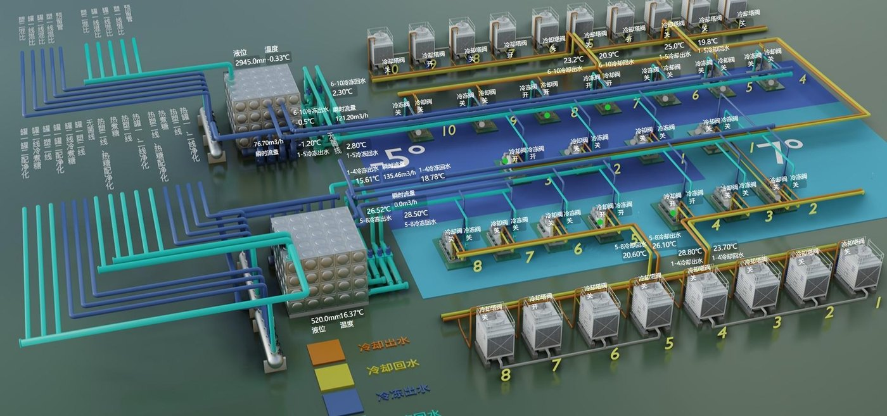
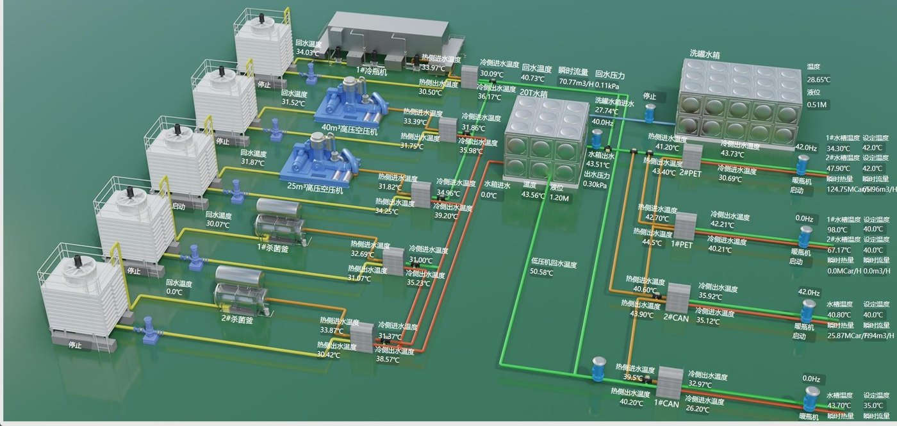

单耗为什么难算准
产品单耗通常等于统计周期内的能源消耗量除以同期合格产品产量。公式看起来简单，实际计算中却容易遇到三个问题：能耗数据来自电表、蒸汽表等多套系统，口径不统一；产量数据掌握在ERP或DCS系统里，与能耗数据不在同一平台；统计周期的起止时间不一致，导致分子分母错位。
因此，单耗分析的前提不是先算，而是先把数据口径与采集边界说清楚。

数据怎么对接
能源管理系统通过采集层接入智能电表、蒸汽表、压缩空气流量计与重点用能设备，形成分项能耗数据；接口层提供数据库接口、OPC接口与TCP接口，可与ERP/SAP、DCS等系统对接，获取产量与工况数据。
东莞某半导体公司的项目实现能源计量与SAP产量数据对接；某不锈钢有限公司则对接DCS与ERP数据，实时计算产品单耗。两类实践的共同点，是把能源数据与生产数据放在同一计算口径下。
计算口径要固定下来
一是明确统计边界，哪些产线、哪些工序纳入计算；二是统一折算规则，不同能源品类如何折标；三是固定统计周期，按日、按班或按月保持一致；四是处理异常数据，停机、检修与试产时段是否剔除，需要事先约定。

单耗算出来之后怎么用
单耗可用于横向对标不同产线、纵向比较不同月份，也可用于评估节能改造效果。某车间单耗持续高于同类车间，往往意味着设备状态或运行策略存在改进空间。
系统架构与接口细节见能源管理系统；如需了解单耗核算方案，可提供服务电话0769-22996692或通过微信扫码交流。